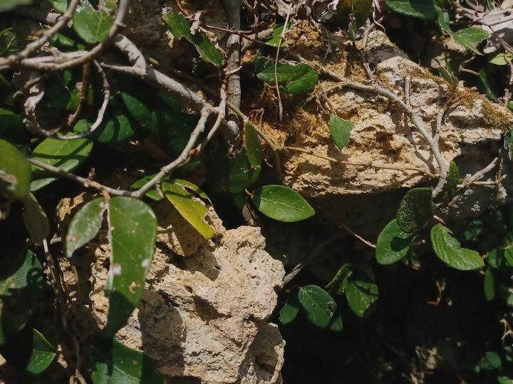

Inicio
Poemas
Música
Galería
Poemas / Diario
像一本夏天留下來的小型手帳，每一張卡片都是一頁。
點開卡片，可以看到完整的照片與文字；以後你只要多寫一篇，就在這裡多加一張卡片即可。

Diario
Un verano que no sabe irse
2025.07.26 · ventana, café frío, luz inclinada
那個夏天的黃昏總是拖得很長，光線一層一層黏在玻璃上，把還沒說完的話照得有點透明。
abrir poema
Diario
La estación después de la lluvia
2025.08.03 · estación, charcos, silencio entre trenes
在朝陽消失的那一刻，小徑上方留下了一道狹長的青空，染著近乎血色的紅。那道光靜靜地垂著，像是把周圍的樹影一分為二。
abrir poema
 Diario
Diario